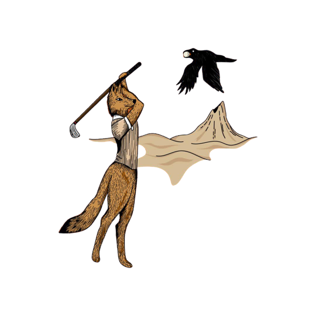

Are you tired of the weekend feeling like a reset that never quite resets?
Do you want to go somewhere inside yourself but don't know how to get there?
Are you curious what's on the other side of the bar scene — not sobriety, just something more?
Are you yearning to do something hard with other men?
Have you been craving a deeper relationship with the natural world?
Golf · Silence · Nature · Fire · The ground beneath you
At some point the weekend stopped being enough. The bar, the blur, the Sunday reset — and then back in. If you're tired of that cycle and curious what's on the other side, you're in the right place.
This is an invitation to slow down and dream a more beautiful world — inward first, then outward — through golf, cowboy camping, and medicinal fire, amongst other young men.
No prior outdoor or camping experience necessary. Just the willingness to embrace discomfort and the curiosity to see what lives on the other side of it.
The frontier is closer than you think.
Find your retreat →